Part A.1
Below are the three image pairs I used for homographies. First is an image at ground level of a street in downtown Berkeley, the second image is a view of Berkeley from a rooftop, and the third image is the first street viewed from a rooftop.
|
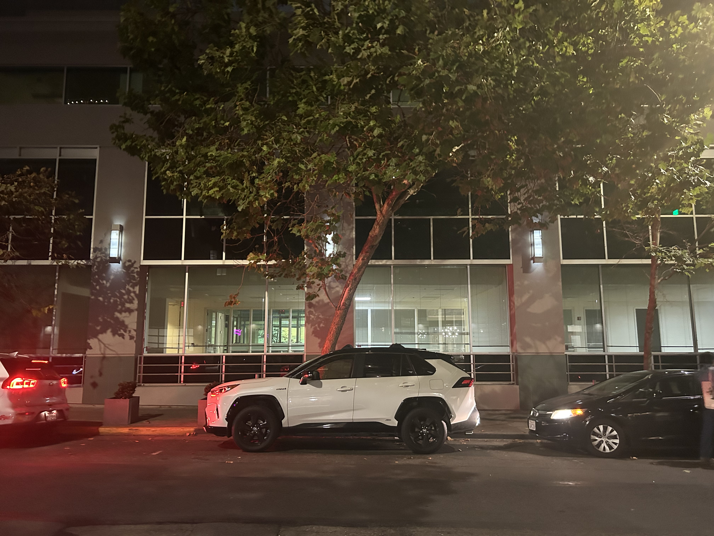 |
Part A.2
Correspondence Set 1
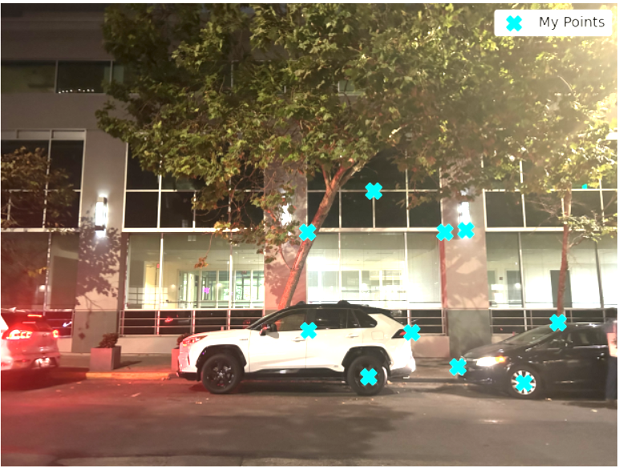
To find our homography matrix we find the value of h that maximizes ||Ah||^2 which is equivalent to the eigenvector corresponding to the smallest eigenvalue of A^TA.
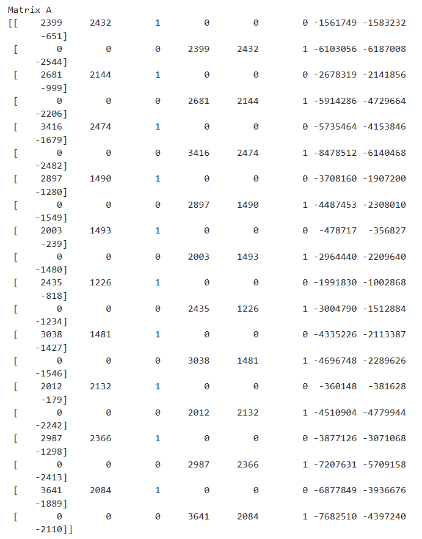
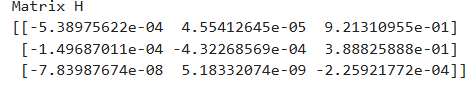
Correspondence Set 2
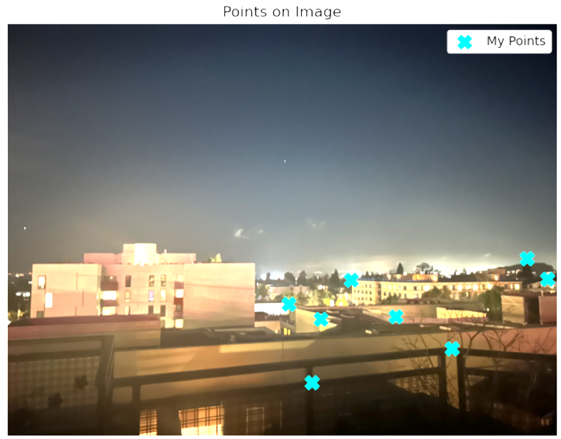
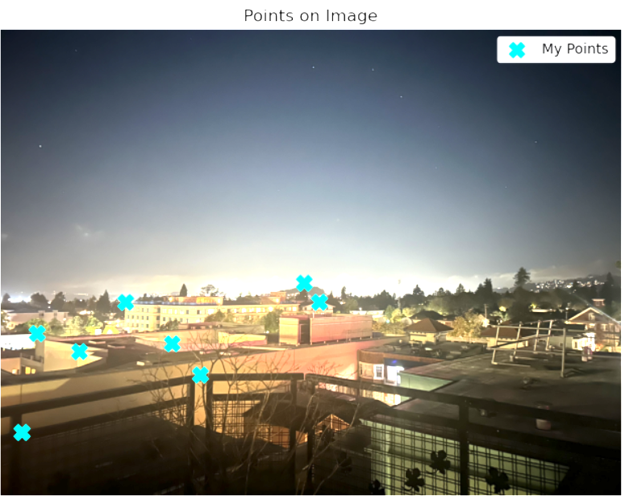
To find our homography matrix we find the value of h that maximizes ||Ah||^2 which is equivalent to the eigenvector corresponding to the smallest eigenvalue of A^TA.
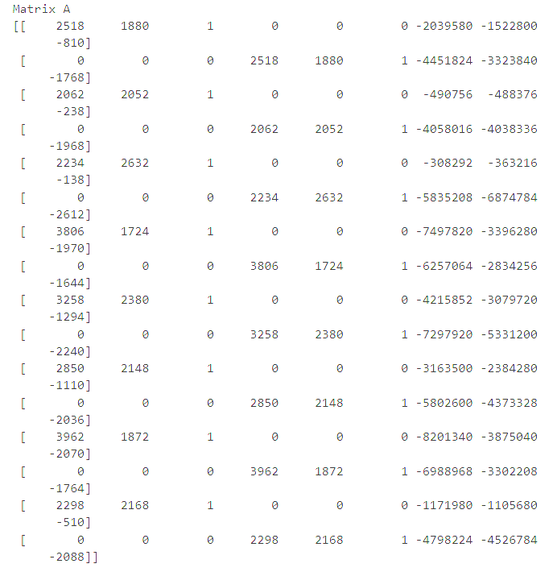
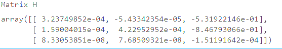
Correspondence Set 3
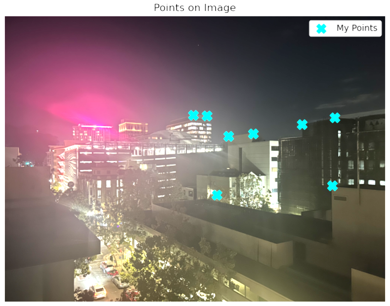
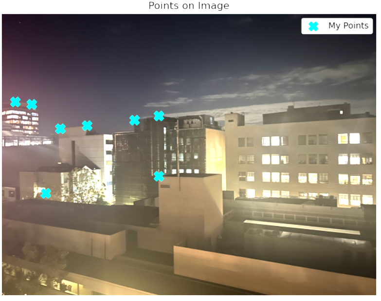
To find our homography matrix we find the value of h that maximizes ||Ah||^2 which is equivalent to the eigenvector corresponding to the smallest eigenvalue of A^TA.
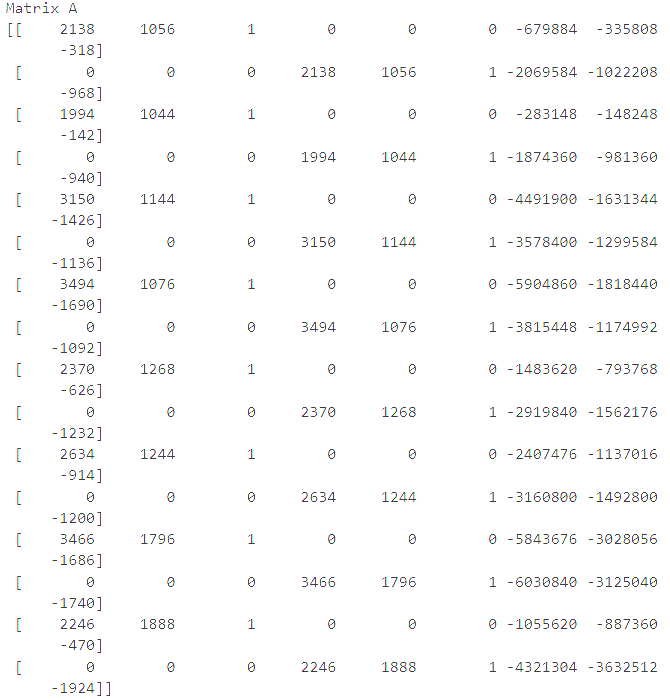
Part A.3
For these two images, we can see that nearest neighbor interpolation is a lot less smooth in comparison to bilinear interpolation. Though it does take longer, for files of this size, the time difference is negligible.
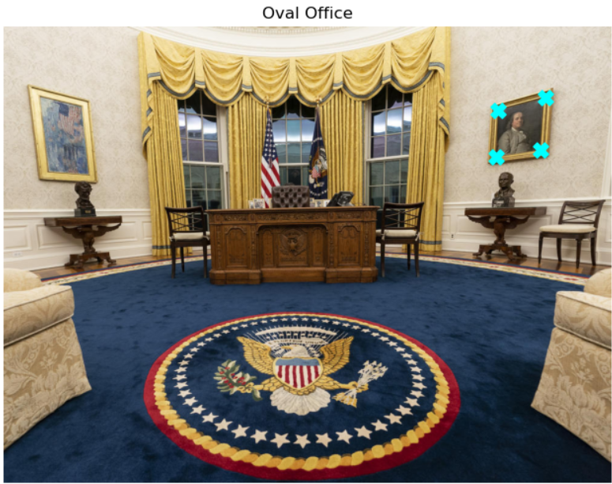
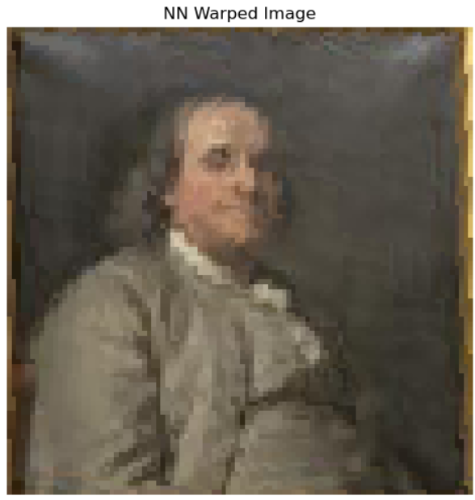
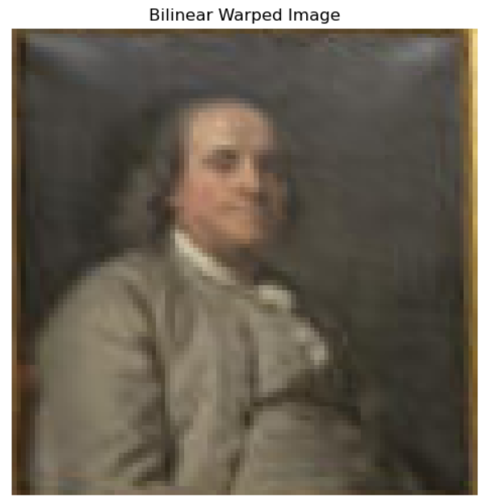
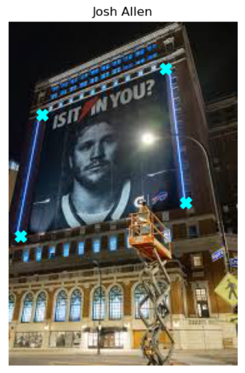
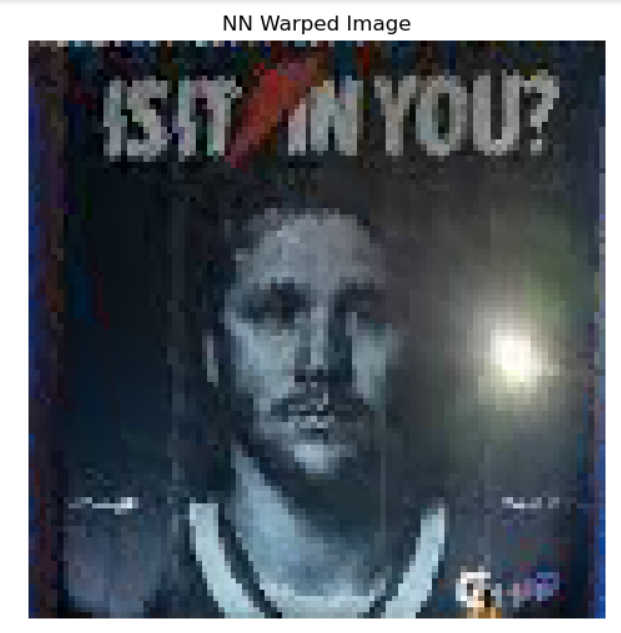
Alignment Issues
The only image I felt that did not align perfectly was the self-portrait. While it aligned well enough to look correct at a glance, zooming in shows the red layer is shifted slightly up in certain places. There are a variety of theories that I have come up with that explain this issue. Since the other images aligned very well this image may have had the red panel taken at a slightly different angle, causing alignment based on translation to be infeasible. On the other hand, the issue could lie with the fact that there is not a very pronounced "light" and "dark" part of the image to align with NCC. A different algorithm, like edge detection, may yield better results here.
Look closely at the rocks at the bottom. Alignment is slightly off!

Bells and Whistles
As I mentioned earlier, even using NCC and a fully functional pyramid alignment implementation, some of my images still did not align properly. The primary reason was that the boundaries of the images featured thick black or even white borders that tended to confuse my NCC algorithm. To remedy this, I simply cropped my images by 10 percent at the start of the align function. This significantly improved my results, as shown with the emir below.
First emir is run with no cropping before alignment. The second emir has a tenth of the edges cropped before alignment is run.